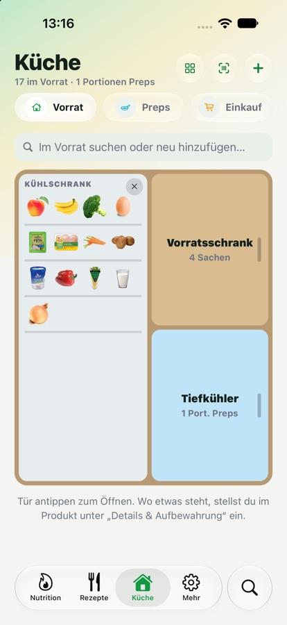
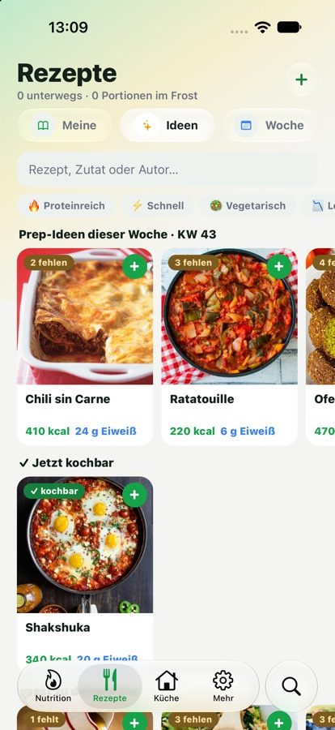
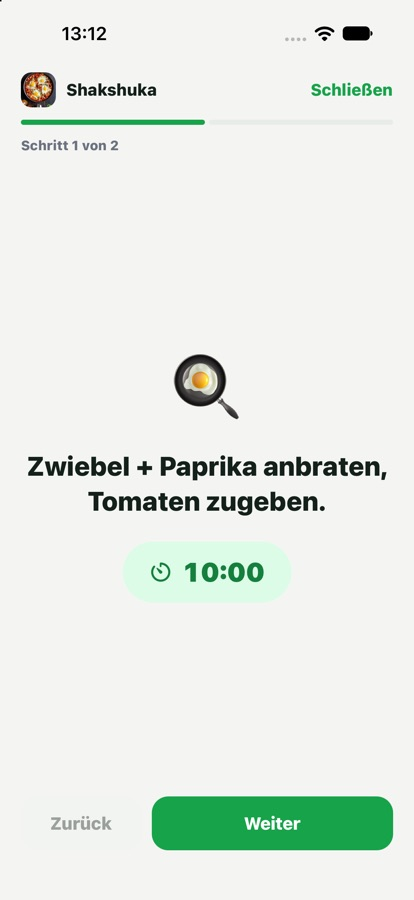
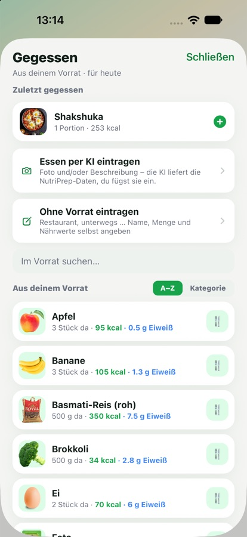
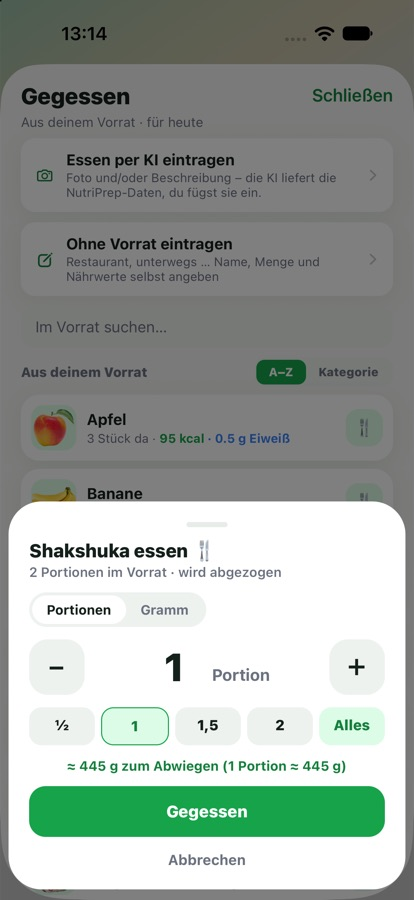

Alles, was NutriPrep kann.Everything NutriPrep can do.
Vom ersten Start über Vorrat, Kochen und Einkaufen bis zur Tagesbilanz.From the first launch through pantry, cooking and shopping to your daily summary.
EinstiegGetting started
In 60 Sekunden startklar.Ready in 60 seconds.
Ziel wählen, ein paar Angaben zu dir, antippen, was zuhause ist. Danach zeigt NutriPrep sofort, was du kochen kannst.Pick a goal, add a few details about you, tap what’s at home. Then NutriPrep immediately shows what you can cook.


← wischen →← swipe →
Vorrat & PrepsPantry & preps
Wissen, was da ist.Know what you have.
Alles, was in Kühlschrank, Schrank und Tiefkühler liegt, mit Menge. Auch deine vorgekochten Portionen.Everything in your fridge, cupboard and freezer, with amounts. Including the portions you cooked ahead.



← wischen →← swipe →
Drei Ansichten, ein Knopf zum Umschalten.Three views, one button to switch.
Haltbarkeit pro Lebensmittel, mit Vorschlag je Kategorie.Best-before date per item, with a suggestion per category.
Nährwerte kommen aus Open Food Facts.Nutrition data comes from Open Food Facts.
Mit Nährwerten und Fotos, dazu deine eigenen Lebensmittel.With nutrition data and photos, plus your own foods.
Packung fotografieren oder Link einfügen, deine KI liefert die Nährwerte.Photograph the pack or paste a link; your AI supplies the nutrition.
Rezepte & KochenRecipes & cooking
Kochen mit dem, was da ist.Cook with what you have.
Jedes Rezept weiß, wie viel davon schon in deinem Vorrat liegt. Beim Kochen werden die Zutaten abgezogen und die Portionen landen als Preps im Tiefkühler.Every recipe knows how much of it is already in your pantry. When you cook, the ingredients are deducted and the portions go into the freezer as preps.





← wischen →← swipe →
Rezepte, die zu deinen restlichen Kalorien passen.Recipes that fit your remaining calories.
Selbst schreiben oder mit deiner eigenen KI importieren.Write your own or import with your own AI.
Der Regler rechnet die Mengen nur für die Anzeige um.The slider rescales amounts for display only.
Rezepte als NutriPrep-Code weitergeben.Pass recipes on as a NutriPrep code.
EinkaufShopping
Nur kaufen, was fehlt.Only buy what’s missing.
Geplante Rezepte minus Vorrat ergibt den Einkaufszettel. Im Laden tippst du an, was im Wagen liegt, und es landet direkt im Vorrat.Planned recipes minus pantry make your shopping list. In the store you tap what’s in the cart and it goes straight into your pantry.


← wischen →← swipe →
Die Liste folgt den Regalen im Laden.The list follows the shelves in the store.
Was du noch hast, ist durchgestrichen.What you still have is crossed out.
Für eine andere Menge als geplant.For a different amount than planned.
NutritionNutrition
Im Blick, ohne Druck.At a glance, without pressure.
Kalorien, Eiweiß, Kohlenhydrate, Fett und Wasser für Tag, Woche und Monat. Eingetragen ist schnell: aus dem Vorrat, wie gestern oder ganz ohne Vorrat.Calories, protein, carbs, fat and water by day, week and month. Logging is quick: from your pantry, same as yesterday, or without the pantry.




← wischen →← swipe →
Vitamine und Mineralstoffe in einer eigenen Ansicht.Vitamins and minerals in their own view.
Serien, Durchschnitt, Ziel-Treffer und Wochen-Rückblick zum Teilen.Streaks, averages, goal hits and a shareable weekly recap.
Tagesziele aus deinen Körperdaten, Gewichtsverlauf.Daily goals from your body data, weight history.
Die Werte sind Richtwerte, keine medizinische Beratung.Values are guidelines, not medical advice.
Gemeinsam & mehrTogether & more
Für den ganzen Haushalt.For the whole household.
Teile Vorrat, Einkauf und Rezepte mit den Menschen, mit denen du wohnst. Und such alles an einem Ort.Share your pantry, shopping and recipes with the people you live with. And search everything in one place.
Per Code verbinden. Vorrat, Einkauf, Rezepte und Fotos gemeinsam.Connect via code. Pantry, shopping, recipes and photos together.
Separat wählbar, nur was ihr freigebt.Chosen separately, only what you allow.
Rezepte, Vorrat und alle Zutaten in einem Feld.Recipes, pantry and all ingredients in one field.
Ganz einfach umschaltbar.Easy to switch.
Automatisch oder von Hand, mit Liquid Glass.Automatic or manual, with Liquid Glass.
Einzelne Bereiche oder alles löschen. Keine Werbung, kein Tracking.Delete single areas or everything. No ads, no tracking.
Hell & dunkelLight & dark
Auch abends schön.Lovely at night, too.
NutriPrep folgt der Einstellung deines iPhones oder deiner Wahl in der App.NutriPrep follows your iPhone’s setting or your choice in the app.
← wischen →← swipe →